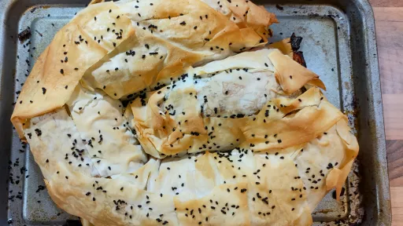

1 hr 5 mins
Serves 6Vegetarian
Middle Eastern
Moroccan

A Moroccan pastilla is traditionally filled with pigeon and apricots. This colourful vegetarian version uses sweet potato and cinnamon. Serve with roast carrots and buttered kale
Ingredients
750g sweet potato, peeled and roughly chopped
1tbsp olive oil, plus 2 tsp
1tbsp cumin seeds
1tsp ground cinnamon
260g young spinach
1
onion, finely chopped
2cloves garlic, crushed
3
red peppers, deseeded and diced
250g pack precooked brown rice
220g pack fresh filo pastry
100g butter, melted
100g vegetarian feta, crumbled
a large pinch of poppy seeds or sesame seeds
Instructions
Preheat the oven to 180°C/Gas 6. Toss the sweet potato with 1 tablespoon of oil, the cumin seeds and ½ teaspoon of cinnamon. Season and tip onto a shallow baking tray. Roast for 30-35 minutes
until tender and lightly golden. Leave to cool.
Blanch the spinach in boiling water for 1 minute
, then drain well. Tip into a colander; press out the liquid using the back of a spoon. Put in a clean tea towel; squeeze out any excess liquid. Leave to cool, then chop. Heat 2 teaspoons of oil in a frying pan and fry the onion for 10 minutes
until soft, but not golden. Add the garlic and peppers, and cook for another 6-8 minutes
until soft. Stir in the rice, remaining cinnamon and seasoning; remove from the heat and cool.
On a large work surface, lay out 3 of the filo sheets end-to-end lengthways (keep the remaining filo pastry covered by a damp tea towel as you work), overlapping each one by about 10 cm; stick them together with the melted butter to create a rectangle, then brush the whole thing generously with more butter. Repeat with 3 more sheets along the top half of the rectangle, positioned so they overhang by 10 cm at the top. Butter again, then add 3 more sheets, this time to overlap by 10 cm at the bottom half of the rectangle. You will end up with a rectangle that's triple thickness in the middle, but only 1 sheet thick along the top and bottom. Spoon the pepper mix along the centre of the pastry (where it is triple thickness), leaving 5 cm at either end. Add the sweet potato, then the spinach and feta on top. Butter the exposed pastry around the filling.
Starting with the closest edge, lift the pastry over the filling, tucking in the ends; then roll up going away from you, to make a sausage. Starting at one end of the sausage, roll up to make a spiral pastilla. Don't worry if it splits, simply butter pieces of the excess filo (you should have about 3 sheets remaining) and patch up the holes while you mould it.
Slide a flat baking sheet gently under the pastilla. Butter the top and exposed sides generously, then sprinkle over the poppy seeds. Bake for 45-50 minutes
until golden and crisp. Leave to rest for 10 minutes